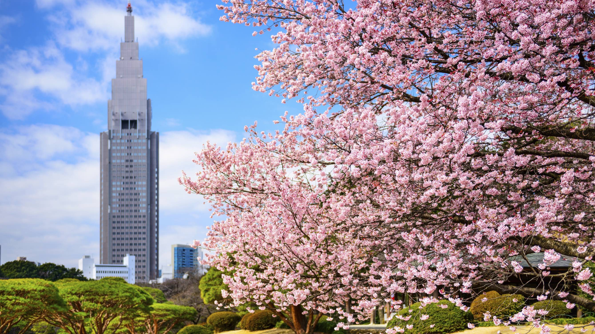
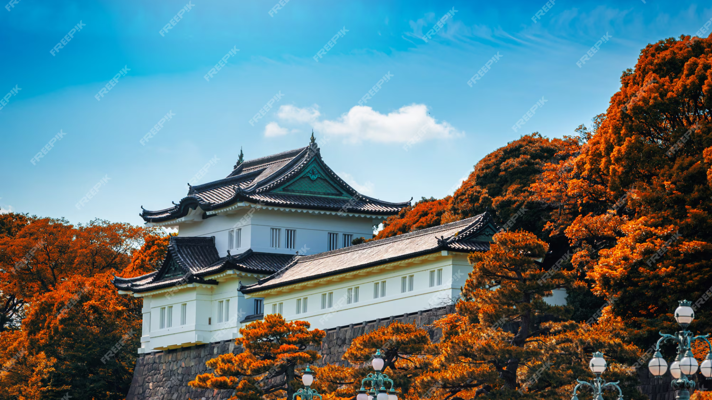
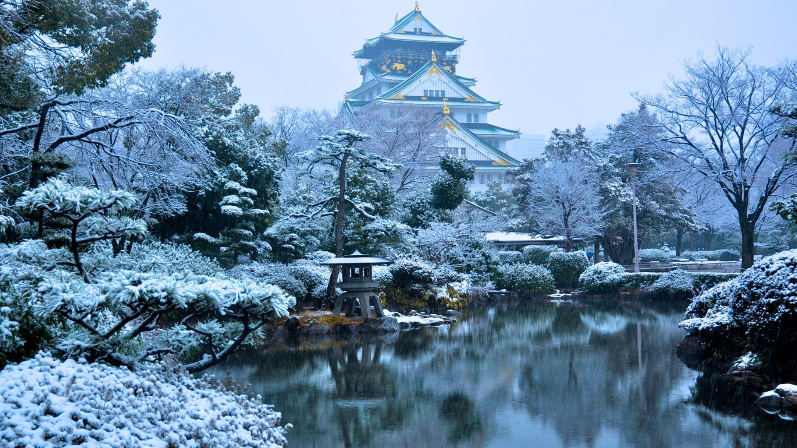

Top Seasonal Destinations

Shinjuku Gyoen National Garden
Shinjuku Gyoen is perfect for viewing sakura (cherry blossoms) in full bloom during the spring season.
Tokyo Imperial Palace
The Imperial Palace offers a breathtaking view of cherry blossoms in spring, providing a serene atmosphere.

Arashiyama Bamboo Grove
Arashiyama is a peaceful bamboo forest, ideal for spring visits when the weather is mild and the greenery flourishes.

Mount Fuji
Summer is the best time to hike Mount Fuji, offering clear views and pleasant weather for climbing.
Arashiyama Monkey Park
During the summer, the Arashiyama Monkey Park provides visitors with a chance to observe macaques in their natural habitat.

Kuromon Ichiba Market
Explore Osaka’s famous market in summer for fresh seafood, traditional street foods, and a lively atmosphere.

Matsumoto Castle
Autumn offers vibrant foliage around Matsumoto Castle, providing a beautiful contrast to its traditional black walls.
Arashiyama Bamboo Grove
Autumn in Arashiyama brings colorful leaves, enhancing the beauty of the bamboo forest.

Tokyo Imperial Palace
The Tokyo Imperial Palace is surrounded by stunning autumn foliage, creating a picturesque backdrop for visits during the fall season.

Osaka Castle
Winter snow transforms Osaka Castle into a winter wonderland, making it the ideal destination for a peaceful winter visit.
Matsumoto Castle
Matsumoto Castle's dark exterior contrasts beautifully with the surrounding snow in winter, creating an enchanting scene.

Mount Fuji
Mount Fuji is a must-see during winter, offering snow-capped views that are perfect for photography enthusiasts.